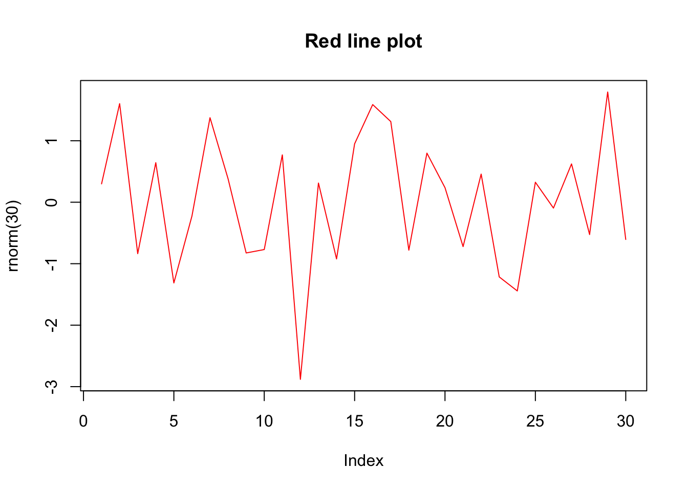
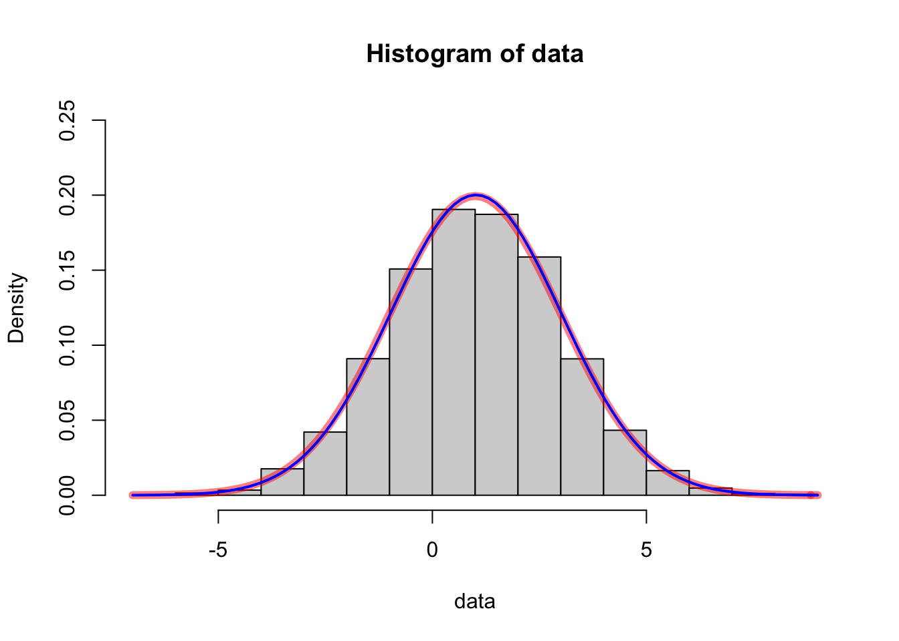

R 的元编程
王诗翔 · 2018-08-03
分类:
r
标签:
r
meta-programming
内容：
- 函数式编程：闭包（closures）与高阶函数（higher-order functions）
- 基于语言计算以及语言对象
- 非标准计算（non-standard evaluation） ## 函数式编程
我们将学习两种函数：一种是在函数内部定义的函数，另一种是与其他函数组合使用的函数。
创建和使用闭包
函数内部定义的函数称为闭包（closure）。闭包的特点是在函数体内，我们可以使用局部参数，也可以使用父环境中的变量。
现用实例说明，假设有函数：
add = function(x, y){
x + y
}该函数有两个参数，每次调用时都需要提供它们。如果使用闭包，我们可以生成事先带指定参数的特殊版本。
创建简单闭包
现在我们创建一个叫addn()的参数：
addn = function(y) {
function(x){
x + y
}
}该函数包含参数y，内部创建一个带参数x的子函数，将y加到参数x上。
这里读者需要仔细思考。函数addn跟我们一般接触的函数都不相同，它的结果不会返回一个数值，而是一个闭包，即定义在函数内部的函数。该闭包计算x+y的值，x是局部参数，y是闭包封闭环境中的参数。整体而言，addn不是一个加法器，而是一个生成加法器的工厂！
该函数工厂（闭包）可以让我们创建专用的函数，比如创建两个函数分别用于对参数加1和加2：
add1 = addn(1)
add2 = addn(2)这两个函数的实际效果与add(y, 1)与add(y, 2)完全等同。
add1(10)
#> [1] 11
add2(10)
#> [1] 12add
#> function(x, y){
#> x + y
#> }
add1
#> function(x){
#> x + y
#> }
#> <environment: 0x7f8a2a8b51e8>比较上面两条语句可以发现，add1与add函数不同，输出结果附带了add1的环境。这是因为一个函数不在当前环境（例子中为全局环境）下，那么输出该函数就会一并显示其所属的环境。在add1的环境中，y是在addn(1)确定的，下面可以证实：
environment(add1)$y
#> [1] 1这里我们调用了environment()函数访问其封闭环境用来捕捉y，这个过程就是闭包的工作方式。
创建专用函数
闭包对于创建专用函数非常有用。例如，我们使用一个专用的简化绘图函数，只使用部分参数，这样的代码更容易编写和阅读：
color_line = function(col){
function(...){
plot(..., type = "l", lty = 1, col = col)
}
}上面函数可以用来创建一个专门画红色线条的函数。
使用效果如下：
red_line = color_line("red")
red_line(rnorm(30), main = "Red line plot")
使用极大似然估计拟合正态分布
闭包在使用一个含有给定数据的算法时很有用。比如，在统计学中很多参数估计问题本质上就是最优化问题——在给定约束条件和数据，找出使目标函数最大化或最小化的一组参数。
极大似然估计MLE是一个很好的例子，它的想法是：给定一个模型，参数的估计值应使观测数据最可能发生。
对参数进行极大似然估计时，我们需要一个函数来衡量给定模型下观测到一组给定数据的可能性，然后运用最优化技术找出使上述概率最大化的参数值。
例如我们知道一组由正态分布产生的观测数据，但是不知道参数：均值和标准差。这里根据给出的数据，用极大似然估计估计这两者的值。
首先，正态分布的密度函数为：
\[ f(x) = \frac{1}{\sqrt{2\pi}\sigma} exp(-\frac{1}{2}\frac{(x-\mu_0)^2}{\sigma_0^2}) \]
因此，给定观测数据x，其似然函数为：
\[ L(\mu,\sigma; x) = (2\pi\sigma^2)^{-\frac{n}{2}} exp(-\frac{1}{2\sigma_0^2}\sum{(x_i-\mu)^2}) \]
（不懂怎么来的，百度学习下）
下面两边同时取对数并加负号：
\[ -l(\mu,\sigma;x) = \frac{n}{2}ln(2\pi)+\frac{n}{2}ln(\sigma^2) + \frac{1}{2\sigma^2}\sum{(x_i - \mu)^2} \]
负对数似然函数与原函数单调性相同，所以其最优化的解也与原函数相同，但求解过程却简单得多。因此MLE通常使用对数似然函数来求解。
下面定义函数，当给定观测数据x后，该函数会返回包含正态分布的两个参数的闭包：
nloglik = function(x){
n = length(x)
function(mean, sd){
log(2 * pi) * n / 2 + log(sd ^ 2) * n / 2 + sum((x - mean) ^2) / (2 * sd ^ 2)
}
}这样对于任意给定的观测数据集，我们都可以调用nloglik()函数得到参数为均值和标准差的负对数似然函数。它说明了在假定真实模型的两个参数分别为mean和sd时，不能观测到给定数据的可能性有多大。
下面用10000个均值为1，标准差为2的正态分布随机数做测试，使用stat4包的mle()函数求解（需要设定数值搜索的起点和解的上下界）。
data = rnorm(10000, 1, 2)
fit = stats4::mle(nloglik(data),
start = list(mean=0, sd=1), method = "L-BFGS-B",
lower = c(-5, 0.01), upper = c(5, 10))结果返回一个S4对象：
fit@coef
#> mean sd
#> 1.02 1.99可以看到，估计值非常接近真实值。下面使用图形展示这一点。
hist(data, freq = FALSE, ylim = c(0, 0.25))
curve(dnorm(x, 1, 2), add = TRUE, col = rgb(1, 0, 0, 0.5), lwd = 6)
curve(dnorm(x, fit@coef[["mean"]], fit@coef[["sd"]]),
add = TRUE, col = "blue", lwd = 2)
红色的真实值和蓝色的模拟值曲线非常接近。
使用高阶函数
何谓高阶函数？将另一个函数作为参数的函数。
R的函数也是对象，可以用变量进行引用，也可以将函数当作参数传递。
像+与-这样的操作符其实本质也是函数，知道这一点，我们便可以简化下面函数：
f1 = function(x, y){
if (x > y) {
x + y
}else {
x -y
}
}考虑到通过条件判断执行不同的操作，其实就是一个选择使用函数的过程：
f2 = function(x, y){
op = if (x > y) `+` else `-`
op(x, y)
}f2与f1完全等同。
下面举一个函数作为参数的例子：
add = function(x, y, z ){
x + y + z
}
product = function(x, y, z){
x * y * z
}
combine = function(f, x, y, z){
f(x, y, z)
}我们先创建了一个3个数的加法和乘法函数，然后定义combine()函数，以参数f的方式组合前面两个函数，这样我们可以根据需要选择适合的函数。
combine(add, 3, 4, 5)
#> [1] 12
combine(product, 3, 4, 5)
#> [1] 60高阶函数使代码在更高的抽象化层次下读写起来更容易。
在R中，apply家族就是典型的高阶函数，支持向量化操作。除了常见的apply、lapply等带apply名字的函数，还包含Filter()、Map()、Reduce()、Find()、Position()、Negate()函数（详情?Filter）。
基于语言的计算
函数只是另一种可被传递的对象，当调用函数时，一个**新的包含尚未求值的实参（promise）的执行环境被创建，以支持函数的执行，这正是惰性求值的基础。
元编程允许我们调整语言本身，使得特定的语言结构在特定情况下更方便使用。这一节我们一起学习它的优缺点。
我们先看看元编程如何使得工作变得更简单。
假设我们现在想把iris数据集中每个数值列超过80%的项筛选出来。
标准方法为：
iris[iris$Sepal.Length > quantile(iris$Sepal.Length, 0.8) &
iris$Sepal.Width > quantile(iris$Sepal.Width, 0.8) &
iris$Petal.Length > quantile(iris$Petal.Length, 0.8) &
iris$Petal.Width > quantile(iris$Petal.Width, 0.8), ]
#> Sepal.Length Sepal.Width Petal.Length Petal.Width Species
#> 110 7.2 3.6 6.1 2.5 virginica
#> 118 7.7 3.8 6.7 2.2 virginica
#> 132 7.9 3.8 6.4 2.0 virginica上述代码在逻辑上非常清楚，但过程非常繁琐。我们使用了8次iris$。
内置函数subset()可以简化：
subset(iris,
Sepal.Length > quantile(Sepal.Length, 0.8) &
Sepal.Width > quantile(Sepal.Width, 0.8) &
Petal.Length > quantile(Petal.Length, 0.8) &
Petal.Width > quantile(Petal.Width, 0.8))
#> Sepal.Length Sepal.Width Petal.Length Petal.Width Species
#> 110 7.2 3.6 6.1 2.5 virginica
#> 118 7.7 3.8 6.7 2.2 virginica
#> 132 7.9 3.8 6.4 2.0 virginica可以看到返回结果完全相同，后者看起来更简洁。为什么上述代码省略了iris$依旧可以运行，但前面代码就不能省略呢（你可以省略试试）。
subset()函数使用元编程技术调整了其参数的计算环境，使表达式Sepal.Length > quantile(Sepal.Length, 0.8)在包含iris所有列的环境中被计算（有接触过attach吗？）。
此外，subset()还调整了列的选取：
subset(iris,
Sepal.Length > quantile(Sepal.Length, 0.8) &
Sepal.Width > quantile(Sepal.Width, 0.8) &
Petal.Length > quantile(Petal.Length, 0.8) &
Petal.Width > quantile(Petal.Width, 0.8), select = c(Sepal.Length, Petal.Length, Species))
#> Sepal.Length Petal.Length Species
#> 110 7.2 6.1 virginica
#> 118 7.7 6.7 virginica
#> 132 7.9 6.4 virginica接下来我们学习代码背后的机制及工作原理。
### 捕获和修改表达式
当我们在交互式控制台键入表达式并按下Enter后，R便会执行并输出结果。
例如：
rnorm(5)
#> [1] 1.027 0.369 0.917 0.532 -0.321subset()神奇之处在于它调整了参数被计算的环境，分两步完成，首先捕获表达式，然后调整表达式的计算。
#### 将表达式捕获为语言对象
捕获表达式意味着防止表达式被执行，而将表达式本身存储为变量的形式。具有这个功能的函数为quote()：
call1 = quote(rnorm(5))
call1
#> rnorm(5)上述代码返回代码本身而不是表达式执行的结果，我们可以使用typeof()和class()观察返回的对象：
typeof(call1)
#> [1] "language"
class(call1)
#> [1] "call"call本质上是一个语言对象，并且是一个函数调用。我们还可以在quote()中写函数名：
name1 = quote(rnorm)
name1
#> rnorm
typeof(name1)
#> [1] "symbol"
class(name1)
#> [1] "name"结果是一个符号（或名称）而不是函数调用。
事实上，quote()捕捉到函数调用时会返回调用，而捕获到变量名时则返回一个符号。唯一的要求是代码语法正确，quote()就会返回表示被捕获表达式本身的语言对象。即便函数不存在或变量未定义。
quote(pvar)
#> pvar
quote(xfun(a = 1:n))
#> xfun(a = 1:n)理解变量和符号对象的区别，以及函数和调用对象的区别非常重要。变量是对象的名称，而符号对象是名称本身。函数是可以被调用的对象，而调用对象是不会被计算的，它表示这个函数调用的语言对象。
上面这段话你初听可能理解不了，我来举例说明。
我们常说变量，有时候是说这个变量的名字，有时候是说变量的内容。比如变量a=3，a是变量a的名字，但我们有时说a的内容3是也会说成a。我们执行a=3时是将内容3赋值给了符号a，形成了变量a。
此处，变量是a，是数字对象3的名称，而符号是a本身，它也是一个对象！
函数理解起来就简单些了，比如我们调用函数min()并不是说计算min()本身，而是计算它指向的一个表达式集合！
概念可以不懂，但要会用，有自己的理解。
将调用对象转换为列表，查看它的结构：
as.list(call1)
#> [[1]]
#> rnorm
#>
#> [[2]]
#> [1] 5结果说明这个调用由函数符号和一个参数两部分组成。我们可以分别提取它们：
call1[[1]]
#> rnorm
typeof(call1[[1]])
#> [1] "symbol"
class(call1[[1]])
#> [1] "name"call1第一个元素是符号。
call1[[2]]
#> [1] 5
typeof(call1[[2]])
#> [1] "double"
class(call1[[2]])
#> [1] "numeric"第二个元素是数值。
quote()将变量名捕获为符号对象，将函数调用捕获为调用对象，两者都是语言对象。我们可以使用is.symbol()/is.name()和is.call()检查它们。更一般，使用is.language()同时检查符号和调用。
如果我们捕获的对象既不是符号，也不是函数，而是变量存储的内容，像数字、字符串等会发生什么呢？
num1 = 100
num2 = quote(100)
str1 = "abc"
str2 = quote("abc")检查：
identical(num1, num2)
#> [1] TRUE
identical(str1, str2)
#> [1] TRUE可见quote()不会将字面值（数字、逻辑值、字符）等转换为语言对象。
但是，由它们组合而成的向量表达式会被转换为语言对象：
call2 = quote(c("a", "b"))
call2
#> c("a", "b")因为c()是函数!
as.list(call2)
#> [[1]]
#> c
#>
#> [[2]]
#> [1] "a"
#>
#> [[3]]
#> [1] "b"str(as.list(call2))
#> List of 3
#> $ : symbol c
#> $ : chr "a"
#> $ : chr "b"同理，像+，-，*，/这样的算术表达式都会被转换，因为它们本质都是函数！
call3 = quote(sqrt(1 + x ^ 2))
call3
#> sqrt(1 + x^2)我们使用pryr包查看函数调用的递归结构：
library(pacman)
p_load(pryr)
pryr::call_tree(call3)
#> \- ()
#> \- `sqrt
#> \- ()
#> \- `+
#> \- 1
#> \- ()
#> \- `^
#> \- `x
#> \- 2上面\-()运算符指调用，\var`指符号对象，其他是字面值。
#### 修改表达式
一旦表达式被捕获为调用对象（符号、调用），我们可以把它们当作列表进行修改。
call1
#> rnorm(5)
call1[[1]] = quote(runif)
call1
#> runif(5)这样rnorm(5)被修改为runif(5)。
还可以在调用中添加新参数：
call1[[3]] = -1
names(call1)[[3]] = "min"
call1
#> runif(`NULL` = 5, min = -1)捕获函数参数表达式
前面我们使用quote()捕获一个已知的表达式，而substitute()可以作用于任意的用户输入表达式。
假设我们想要捕获参数x的表达式，首先我们想到用quote()：
fun1 = function(x){
quote(x)
}测试：
fun1(rnorm(5))
#> x显然，quote(x)捕获的是表达式x，而不是输入表达式rnorm(5)。下面使用substitute()：
fun2 = function(x){
substitute(x)
}
fun2(rnorm(5))
#> rnorm(5)下面用两个实例延时使用语言对象或者字面值列表作为参数，substitute()的运行方式：
substitute(x + y + x ^2, list(x = 1))
#> 1 + y + 1^2
substitute(f(x + f(y)), list(f = quote(sin)))
#> sin(x + sin(y))
substitute(x, list(x = quote(rnorm(5))))
#> rnorm(5)因此，**使用quote()捕获表达式，使用substitute()捕获用户输入的表达式。
#### 创建函数调用
除了捕获表达式，我们还可以使用内置函数创建语言对象。
call1 = quote(rnorm(5, mean = 3))
call1
#> rnorm(5, mean = 3)使用call()创建相同的函数调用：
call2 = call("rnorm", 5, mean = 3)
call2
#> rnorm(5, mean = 3)还可以使用as.call()将一个调用列表转换为调用：
call3 = as.call(list(quote(rnorm), 5, mean = 3))
call3
#> rnorm(5, mean = 3)上面3种方式完全相同。
### 执行表达式
前面学习了表达式的捕获，下一步就是求值！eval()函数可以完成这个工作。
如果在R console键入sin(1)按下回车键会马上返回结果：
sin(1)
#> [1] 0.841如果想要控制它的计算，我们先使用quote()捕获表达式，然后使用eval()计算：
call1 = quote(sin(1))
call1
#> sin(1)
eval(call1)
#> [1] 0.841到此，我们可以捕获任意语法正确的表达式，根据需要修改，并后续执行。 注意，如果表达式计算时需要的变量值不存在，会报错：
call2 = quote(sin(x))
call2
#> sin(x)计算：
eval(call2)
#> Error in eval(call2): object 'x' not found直接在控制台运行和使用eval()的区别在于，eval()允许我们提供一个列表来计算给定表达式。我们并不需要创建一个变量x，只要提供一个包含x的临时列表，表达式会在列表中搜索符号：
eval(call2, list(x = 1))
#> [1] 0.841或者，我们也可以在eval()中添加一个搜索符号的环境。下面创建一个新环境试试：
e1 = new.env()
e1$x = 1
eval(call2, e1)
#> [1] 0.841eval(expr, envir, enclos)计算模式与调用函数相同，函数体为expr，执行环境为envir。如果envir以列表形式给出，封闭环境便是enclos，否则，封闭环境是envir的父环境。
call3 = quote(x ^ 2 + y ^ 2)
call3
#> x^2 + y^2e1 = new.env()
e1$x = 2
eval(call3, e1)
#> Error in eval(call3, e1): object 'y' not founde2 = new.env(parent = e1)
e2$y = 3
eval(call3, e2)
#> [1] 13非标准计算
前面一节学习的几个函数组成了R元编程的基本能力，让我们能调整标准计算。元编程的主要应用是执行非标准计算以使某些特定用法更容易。下面讨论几个例子来实际理解它和应用它。
使用非标准计算快速构建子集
我们经常需要从向量中取出某个子集。现在假设有一个整数向量，我们想提取第3个到倒数第5个。
标准方法：
x = 1:10
x[3:(length(x)-5)]
#> [1] 3 4 5上面表达式使用了2次x，看起来有些繁琐。
我们可以定义一个快速提取子集的函数，使用元编程工具提供一个特殊符号来引用输入向量的长度。
下面是该功能的简单实现，使用.来表示输入向量的长度：
qs = function(x, range){
range = substitute(range)
selector = eval(range, list(. = length(x)))
x[selector]
}现在我们可以使用3:(.-5)表示相同地范围：
qs(x, 3:(. -5))
#> [1] 3 4 5还可以使用倒序的方式提取元素：
qs(x, . -1)
#> [1] 9基于qs()，下面函数用于剔除向量x的前n个和后n个元素：
trim_margin = function(x, n){
qs(x, (n + 1):(. -n - 1))
}这个函数看起来没问题，但使用时发生了错误：
trim_margin(x, 3)
#> Error in eval(range, list(. = length(x))): object 'n' not found为什么会找不到n呢？我们有必要分析该函数调用时符号的查找路径。
动态作用域
错误发生在eval()语句上，此处找不到数n。这一定是封闭环境发生了问题，我们检查函数eval()：
eval
#> function (expr, envir = parent.frame(), enclos = if (is.list(envir) ||
#> is.pairlist(envir)) parent.frame() else baseenv())
#> .Internal(eval(expr, envir, enclos))
#> <bytecode: 0x7f8a26109b58>
#> <environment: namespace:base>从定义上看，当提供一个列表时，enclos会取默认值parent.frame()，而这是eval()的调用环境（不是qs()的，也就是调用qs()时的执行环境，该环境中没有n。
这里我们可以发现substitute()的缺点，它只捕获表达式，而不捕获表达式有意义的环境（这正是quosure的由来吧，就是为了解决这问题）。我们需要自己完成这一步。
既然知道问题所在，解决就简单了。我们只需要指定环境为qs()的调用环境：
qs = function(x, range){
range = substitute(range)
selector = eval(range, list(. = length(x)), parent.frame())
x[selector]
}重新测试：
trim_margin(x, 3)
#> [1] 4 5 6这个机制就是动态作用域，每次调用函数时都会创建一个执行环境，如果一个符号在执行环境中找不到，就会取封闭环境中搜索。在标准计算中，函数的封闭环境在函数被定义时就已经确定，而在非标准计算中，封闭环境应该是调用环境（这一点是不确定的）。因此，当函数使用非标准计算时，正确实现动态作用域机制非常重要。
使用公式捕获表达式和环境
为了正确实现动态作用域机制，我们使用parent.frame()追踪substitute()捕获的表达式，一个更简单地办法是使用公式同时捕获表达式和环境。
公式对象会自动不会~符号两边的表达式以及创建它的环境。我们可以直接创建一个公式并存储在变量中：
formula1 = z ~ x ^ 2 + y ^ 2公式实质上是属于formula类的语言对象：
typeof(formula1)
#> [1] "language"
class(formula1)
#> [1] "formula"我们依旧将它转换为列表，查看结构：
str(as.list(formula1))
#> List of 3
#> $ : symbol ~
#> $ : symbol z
#> $ : language x^2 + y^2
#> - attr(*, "class")= chr "formula"
#> - attr(*, ".Environment")=<environment: R_GlobalEnv>可以看到formula1不仅将~两侧的表达式捕获为语言对象，还捕获了创建它的环境。实际上，公式就是一个基于被捕获参数和调用环境的函数~调用。
我们可以像之前那样用列表的方式提取元素：
formula1[[2]]
#> z
formula1[[3]]
#> x^2 + y^2访问调用环境：
environment(formula1)
#> <environment: R_GlobalEnv>公式也可以是右侧型的：
formula2 = ~ x + y
str(as.list(formula2))
#> List of 2
#> $ : symbol ~
#> $ : language x + y
#> - attr(*, "class")= chr "formula"
#> - attr(*, ".Environment")=<environment: R_GlobalEnv>下面我们使用公式实现qs()与trim_margin()的另一个版本。
当range是一个公式时，函数qs2()与qs()运行方式一致；否则它直接用range提取x子集。
qs2 = function(x, range){
selector = if (inherits(range, "formula")) {
eval(range[[2]], list(. = length(x)), environment(range))
}else range
x[selector]
}我们使用inherits()检查range是不是一个公式，使用environment(range)实现动态作用域。然后用右侧型公式激活非标准计算：
qs2(1:10, ~3:(. -2))
#> [1] 3 4 5 6 7 8或者使用标准计算：
qs2(1:10, 3)
#> [1] 3我们再借助公式版qs2()实现trim_margin()：
trim_margin2 = function(x, n){
qs2(x, ~ (n+1):(.-n -1))
}测试：
trim_margin2(x, 3)
#> [1] 4 5 6使用元编程构建子集
了解前面的语言对象、求值函数以及动态作用域机制后，现在来实现subset的另一个版本。
基本想法：
- 捕获行构建子集表达式，并在数据框内对其求值，数据框本质上是列表
- 捕获按列选取的表达式，并在整数索引的命名列表中对其求值
- 使用行选择器（逻辑向量）和列选择器（整数向量）对数据框选取子集
subset2 = function(x, subset = TRUE, select = TRUE){
enclos = parent.frame()
subset = substitute(subset)
select = substitute(select)
row_selector = eval(subset, x, enclos)
col_envir = as.list(seq_along(x))
names(col_envir) = colnames(x)
col_selector = eval(select, col_envir, enclos)
x[row_selector, col_selector]
}按行构建子集比按列更容易实现。按行我们只需要捕获subset并在数据框内对其求值即可。
按列我们首先要给列创建一个整数索引列表，并给它们赋予相应的名称。例如，一个具有3列（x,y,z）的数据框需要这样一个索引列表：list(a = 1, b = 2, c = 3)，这样让我们能够以select = c(x, y)的形式选取列，因为c(x, y)是在列表内被计算的。
下面测试使用：
subset2(mtcars, mpg >= quantile(mpg, 0.9), c(mpg, cyl, qsec))
#> mpg cyl qsec
#> Fiat 128 32.4 4 19.5
#> Honda Civic 30.4 4 18.5
#> Toyota Corolla 33.9 4 19.9
#> Lotus Europa 30.4 4 16.9以及:符号的使用：
subset2(mtcars, mpg >= quantile(mpg, 0.9), mpg:drat)
#> mpg cyl disp hp drat
#> Fiat 128 32.4 4 78.7 66 4.08
#> Honda Civic 30.4 4 75.7 52 4.93
#> Toyota Corolla 33.9 4 71.1 65 4.22
#> Lotus Europa 30.4 4 95.1 113 3.77